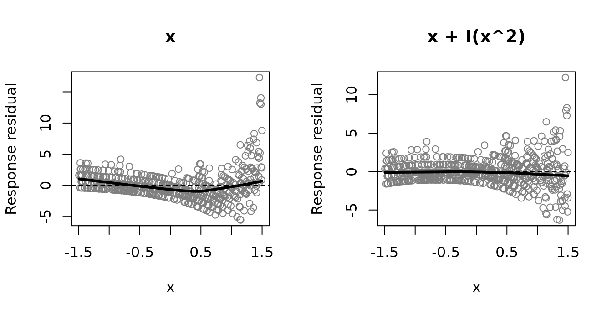
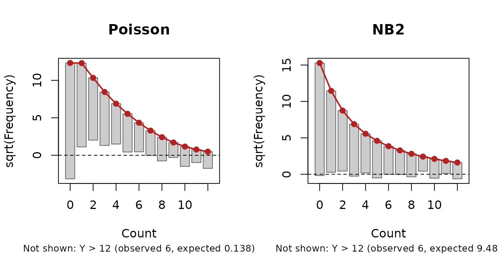
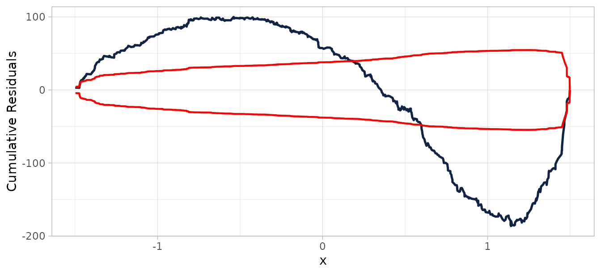
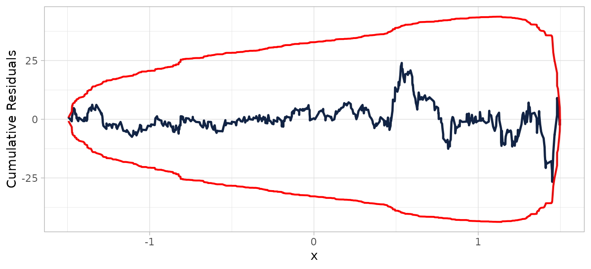
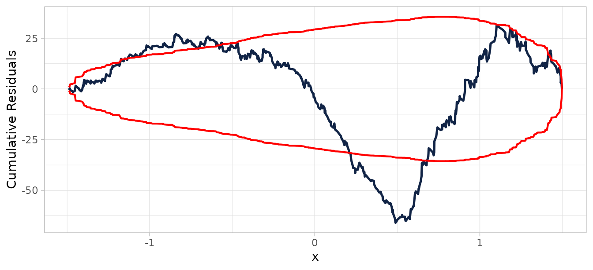
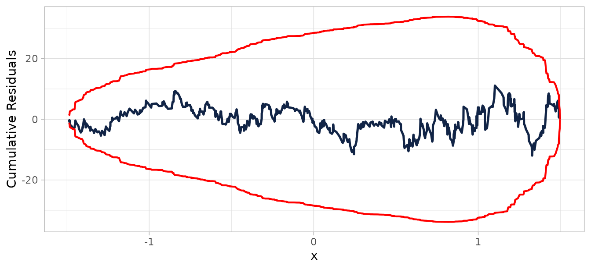
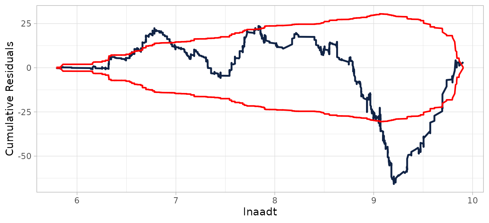
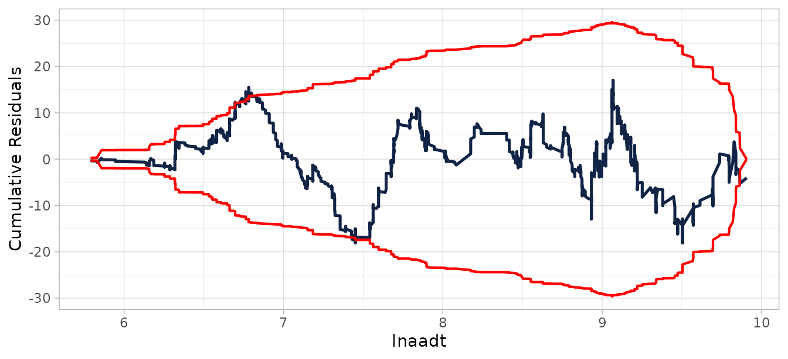

Diagnosing a count model and deciding what to change
Source:vignettes/diagnosing-count-models.Rmd
diagnosing-count-models.RmdA fitted count model can fail in different ways: the mean can have the wrong shape, the variance can be too small, or the model can get the zeros or the upper tail wrong. Different diagnostics answer different questions. This vignette uses simulated data, where the truth is known, to show what each diagnostic reveals and what change it suggests, and ends with a real example.
Question and data
Question: where does a fitted model fail, and what change could fix it?
Three counts are simulated for the same 600 units, each a function of
one covariate x:
| Response | True model | Problem when fitting y ~ x with Poisson |
|---|---|---|
y_ok |
Poisson, | none (the reference case) |
y_curve |
Poisson, | the mean is missing the term |
y_disp |
NB2, , | the variance is too small (overdispersion) |
set.seed(101)
n <- 600
x <- runif(n, -1.5, 1.5)
sim <- data.frame(
x = x,
y_ok = rpois(n, exp(0.5 + 0.8 * x)),
y_curve = rpois(n, exp(0.3 + 0.8 * x + 0.6 * x^2)),
y_disp = rnbinom(n, size = 1 / 0.8, mu = exp(0.5 + 0.8 * x)))
ok <- countreg(y_ok ~ x, data = sim, family = "POISSON", method = "BFGS")
curve_lin <- countreg(y_curve ~ x, data = sim, family = "POISSON",
method = "BFGS")
disp_pois <- countreg(y_disp ~ x, data = sim, family = "POISSON",
method = "BFGS")A first summary: the Pearson dispersion
The Pearson statistic divided by the residual degrees of freedom should be near 1 when the mean and variance are both right:
pearson <- function(fit) {
sum(residuals(fit, type = "pearson")^2) / (nobs(fit) - length(coef(fit)))
}
round(c(ok = pearson(ok), curve = pearson(curve_lin),
dispersion = pearson(disp_pois)), 2)
#> ok curve dispersion
#> 1.08 1.71 2.70Both problems inflate it. A large value says that something is wrong, not what: a misspecified mean leaves systematic structure in the residuals, which also looks like extra variance. The diagnostics below separate the two.
Residuals against a predictor: is the mean right?
Response residuals
()
plotted against a covariate should scatter around zero with no trend. A
smooth curve through them (here lowess()) makes a trend
visible:
curve_quad <- countreg(y_curve ~ x + I(x^2), data = sim, family = "POISSON",
method = "BFGS")
op <- par(mfrow = c(1, 2))
for (f in list(curve_lin, curve_quad)) {
r <- residuals(f, type = "response")
plot(sim$x, r, col = "grey50", xlab = "x", ylab = "Response residual",
main = deparse(formula(f)[[3]]))
lines(lowess(sim$x, r), lwd = 3)
abline(h = 0, lty = 2)
}
Response residuals against x for the curved mean, before (left) and after (right) adding x^2.
par(op)
round(c(before = pearson(curve_lin), after = pearson(curve_quad)), 2)
#> before after
#> 1.71 0.98The U-shaped trend of the linear model disappears when is added, and the Pearson dispersion returns to about 1: the “overdispersion” was a missing mean term, not extra variance.
Rootograms: zeros, the body and the tail
A rootogram compares the observed frequency of each count with the frequency expected under the fitted model. In a hanging rootogram the bars hang from the expected curve (on a square-root scale), so a bar that ends above zero marks a count observed less often than expected and one that ends below zero a count observed more often.
disp_nb2 <- countreg(y_disp ~ x, data = sim, family = "NB2", method = "BFGS")
op <- par(mfrow = c(1, 2))
rootogram(disp_pois, max_count = 12, main = "Poisson")
rootogram(disp_nb2, max_count = 12, main = "NB2")
Hanging rootograms for the overdispersed count: Poisson (left) and NB2 (right).
par(op)The Poisson model expects too few zeros and too few large counts, and too many moderate ones: the typical signature of overdispersion. NB2 removes the pattern.
The display cutoff only limits what is drawn; the expected frequencies of the counts that are shown do not depend on it, and the probability beyond the cutoff is reported rather than lost:
full <- rootogram(disp_pois, plot = FALSE)
cut8 <- rootogram(disp_pois, max_count = 8, plot = FALSE)
all.equal(full$expected[1:9], cut8$expected)
#> [1] TRUE
attr(cut8, "tail") # observed and expected counts above 8
#> observed expected
#> 25.00000 5.22389With overflow = TRUE that tail is added as a final
bin.
Randomized quantile residuals
For a continuous outcome, transforming each observation by its fitted distribution function gives residuals that are standard normal when the model is right. For counts the distribution function jumps, so a uniform random number is drawn within each jump (Dunn and Smyth, 1996). The result is exactly standard normal when the model and its parameters are correct; with estimated parameters it is approximately so. Because of the random draws, set a seed, and do not read too much into a single plot:
set.seed(1)
q1 <- residuals(ok, type = "quantile")
set.seed(2)
q2 <- residuals(ok, type = "quantile")
op <- par(mfrow = c(1, 2))
qqnorm(q1, main = "seed 1"); qqline(q1)
qqnorm(q2, main = "seed 2"); qqline(q2)Normal Q-Q plots of quantile residuals for the correctly specified model, with two different seeds.
Even for the correct model, the residuals from two seeds correlate only 0.89: the randomization is substantial when counts are small. Patterns that persist across seeds are informative; a single wiggle is not.
set.seed(3)
op <- par(mfrow = c(1, 2))
for (f in list(disp_pois, disp_nb2)) {
plot(predict(f), residuals(f, type = "quantile"), xlab = "Fitted mean",
ylab = "Quantile residual", main = f$model$family)
abline(h = c(-2, 0, 2), lty = c(2, 1, 2))
}Quantile residuals against fitted means for the overdispersed count: Poisson (left) and NB2 (right).
par(op)Under the Poisson model far more than 5% of the residuals lie outside , at all fitted means; under NB2 they do not.
Zeros and exceedances: calibration of probabilities
predict(type = "prob") gives each unit’s fitted
probabilities, so the expected share of zeros (or of counts above a
threshold) can be compared with the observed share over the same rows.
overflow = TRUE adds the probability above
max_count, so each row sums to one and the upper tail is
not lost:
calib <- function(fit, y, k = 8) {
P <- predict(fit, type = "prob", max_count = 30, overflow = TRUE)
c(zeros_expected = mean(P[, 1]),
above_k_expected = mean(rowSums(P[, -(1:(k + 1))])))
}
rbind(observed = c(mean(sim$y_disp == 0), mean(sim$y_disp > 8)),
poisson = calib(disp_pois, sim$y_disp),
nb2 = calib(disp_nb2, sim$y_disp))
#> zeros_expected above_k_expected
#> observed 0.3983333 0.041666667
#> poisson 0.2529679 0.008706483
#> nb2 0.3893101 0.043015938The Poisson model expects about 25% zeros where 40% are observed, and far too few counts above 8. NB2 is close on both. Calibration checks like these are useful when zeros or large counts matter for the application.
CURE plots: cumulative residuals along a covariate
A CURE plot (Hauer and Bamfo, 1997) sorts the units by a covariate
and plots the running sum of the residuals (observed minus fitted). When
the mean is right for every value of the covariate, the curve wanders
around zero. cureplot() uses the cureplots package; its
bounds (about two standard deviations of the cumulative sum) assume
independent residuals, so they are a rough guide rather than a
calibrated test.
Reading the trends
The slope of the curve over a range of the covariate is the average residual there, so the direction of each stretch says how the model errs:
- Upward trend: observed counts exceed the predictions, so the model under-predicts over that range.
- Downward trend: the model over-predicts over that range.
- No trend (a flat curve around zero): the mean is right there.
Where the trends start and stop points to what the model is missing:
| CURE pattern | Likely cause | Possible change |
|---|---|---|
| A smooth arch (down then up, or up then down) over the whole range | wrong functional form | polynomial, spline or transformed term |
| A change of direction at one value of the covariate | a threshold effect: missing indicator | indicator (or piecewise) term for the threshold |
| Different trends in different subgroups | missing interaction | interaction between the covariate and the subgroup |
| A trend along a variable that is not in the model | omitted variable | add it, or a function of it |
| A trend along the fitted values | wrong overall functional form or link | revisit the mean model |
Sharp or long trends matter more than short wiggles: the curve is a sum of noisy residuals, so it drifts by chance too. The bounds help to judge this.
Functional form: an arch
For the curved mean simulated above, the linear model leaves an arch, and the quadratic model removes it:
cureplot(curve_lin, indvar = "x")
CURE plots for the curved mean: linear (top) and quadratic (bottom) models.
cureplot(curve_quad, indvar = "x")
CURE plots for the curved mean: linear (top) and quadratic (bottom) models.
The linear model’s cumulative residuals rise, fall and rise again and
leave the bounds: it under-predicts at both ends of x and
over-predicts in the middle, the signature of a missing
term. The quadratic model’s curve stays within the bounds.
A missing indicator: a change of direction at a threshold
Here the counts jump when x exceeds 0.5, but the model
has only a linear term in x:
set.seed(102)
step_dat <- data.frame(x = runif(n, -1.5, 1.5))
step_dat$above <- as.numeric(step_dat$x > 0.5)
step_dat$y <- rpois(n, exp(0.4 + 0.5 * step_dat$x + 0.7 * step_dat$above))
no_ind <- countreg(y ~ x, data = step_dat, family = "POISSON",
method = "BFGS")
with_ind <- countreg(y ~ x + above, data = step_dat, family = "POISSON",
method = "BFGS")
cureplot(no_ind, indvar = "x")
CURE plots along x without (top) and with (bottom) the indicator for x > 0.5.
cureplot(with_ind, indvar = "x")
CURE plots along x without (top) and with (bottom) the indicator for x > 0.5.
Without the indicator, the curve falls until about
x = 0.5 and then climbs steeply: the linear term is a
compromise that over-predicts below the threshold and under-predicts
above it. The average residual in each range, which is the slope of the
curve there, shows the same thing in numbers:
seg_mean <- function(fit, data, v, breaks) {
r <- data$y - predict(fit, newdata = data)
round(tapply(r, cut(data[[v]], breaks, include.lowest = TRUE), mean), 3)
}
rbind(without_indicator = seg_mean(no_ind, step_dat, "x", c(-1.5, 0.5, 1.5)),
with_indicator = seg_mean(with_ind, step_dat, "x", c(-1.5, 0.5, 1.5)))
#> [-1.5,0.5] (0.5,1.5]
#> without_indicator -0.162 0.337
#> with_indicator 0.000 0.000A change of direction at a particular value is a cue to try an
indicator for that value (here x > 0.5); after adding
it, the curve has no trend.
A real example: crashes and traffic volume
The same reasoning applies to the Washington road segments. A
negative binomial model for total crashes with log traffic volume
(lnaadt), log length and the speed-limit indicator:
data("washington_roads")
wa <- washington_roads
wa$AADT10kplus <- as.numeric(wa$AADT > 10000)
nb_base <- countreg(Total_crashes ~ lnaadt + lnlength + speed50, data = wa,
family = "NB2", method = "BFGS")
cureplot(nb_base, indvar = "lnaadt")
CURE plot along lnaadt for the model without the high-volume indicator.
The curve stays within the bounds up to lnaadt of about
8.8, then falls steeply below the lower bound until about 9.2 and climbs
back above it: the model over-predicts crashes on segments just below
about 10,000 vehicles per day
()
and under-predicts them above it. That suggests a threshold in traffic
volume, so an indicator for segments with more than 10,000 vehicles per
day (AADT10kplus) is added, and, to check whether the
effect of volume also changes above the threshold, an interaction:
nb_ind <- countreg(Total_crashes ~ lnaadt + lnlength + speed50 +
AADT10kplus, data = wa, family = "NB2",
method = "BFGS")
nb_int <- countreg(Total_crashes ~ lnaadt + lnlength + speed50 +
AADT10kplus + AADT10kplus:lnaadt, data = wa,
family = "NB2", method = "BFGS")
cureplot(nb_ind, indvar = "lnaadt")
CURE plot along lnaadt with the high-volume indicator.
With the indicator, the curve no longer climbs at the high end. The average residuals below and above the threshold, and AIC, agree:
wa_seg <- function(fit) {
r <- wa$Total_crashes - predict(fit, newdata = wa)
round(tapply(r, cut(wa$lnaadt, c(-Inf, 8.5, log(10000), Inf)), mean), 3)
}
cbind(rbind(base = wa_seg(nb_base), indicator = wa_seg(nb_ind),
interaction = wa_seg(nb_int)),
AIC = round(c(AIC(nb_base), AIC(nb_ind), AIC(nb_int)), 1))
#> (-Inf,8.5] (8.5,9.21] (9.21, Inf] AIC
#> base 0.008 -0.190 0.807 2179.9
#> indicator 0.000 0.003 -0.064 2145.2
#> interaction -0.001 0.006 -0.061 2146.5The indicator removes most of the under-prediction above 10,000 vehicles per day and lowers AIC. Adding the interaction changes little and raises AIC, so for these data the threshold shifts the crash level rather than the effect of volume. Only 83 segments are above the threshold, so the high end of the curve rests on few segments; held-out evidence (next section) is a good check before settling on the change.
A CURE plot can also be drawn along a variable that is not yet in the
model (any column of data), which shows whether that
variable explains part of what the model misses, and along the fitted
values (the default, without indvar), which checks the mean
model as a whole.
Deciding on a change: use predictive evidence
In-sample criteria (AIC, BIC) and diagnostics on the fitted data can favour a more flexible model for reasons that do not generalize. A held-out comparison asks how well each model predicts units it has not seen. Here the log score is the average log probability that a model assigns to the observed held-out counts (larger is better):
set.seed(7)
train_rows <- sample(n, 400)
train <- sim[train_rows, ]
test <- sim[-train_rows, ]
log_score <- function(fit, test) {
P <- predict(fit, newdata = test, type = "prob",
max_count = max(test$y_disp))
mean(log(P[cbind(seq_len(nrow(test)), test$y_disp + 1)]))
}
fit_p <- countreg(y_disp ~ x, data = train, family = "POISSON",
method = "BFGS")
fit_nb <- countreg(y_disp ~ x, data = train, family = "NB2",
method = "BFGS")
round(c(poisson = log_score(fit_p, test), nb2 = log_score(fit_nb, test)), 3)
#> poisson nb2
#> -2.307 -1.850NB2 predicts the held-out counts better, which agrees with the diagnostics. A single split is a rough check; repeated or cross-validated splits are more reliable.
Summary: patterns and what they suggest
| Pattern | Possible explanations | Follow-up |
|---|---|---|
| Pearson dispersion well above 1 | missing mean terms; overdispersion; omitted grouping | look for trends in residuals before adding dispersion |
| Trend in residuals against a covariate, or a CURE plot arch | wrong functional form | add terms (polynomial, spline, transformation); recheck |
| CURE plot changes direction at one covariate value | threshold effect | indicator or piecewise term; recheck |
| CURE trends differ between subgroups | missing interaction | interaction term; recheck |
| Too few zeros and large counts expected (rootogram, calibration) | variance too small | dispersion-flexible family; compare on held-out data |
| Too many zeros observed, rest fits | possible zero process | zero-inflated or hurdle model (zero_formula); check
other explanations first |
| Quantile residuals beyond more than about 5% of the time | variance or tail misfit | rootogram and calibration to locate it |
None of these patterns identifies a unique distribution: several families can produce the same rootogram, and excess zeros can come from overdispersion as well as from a separate zero process.
A real example
For the insect counts of
vignette("getting-started", package = "flexCountReg"), the
NB1 model’s quantile residuals show no trend with the fitted mean:
insects <- countreg(count ~ spray, data = datasets::InsectSprays,
family = "NB1", method = "BFGS")
set.seed(4)
plot(predict(insects), residuals(insects, type = "quantile"),
xlab = "Fitted mean", ylab = "Quantile residual")
abline(h = c(-2, 0, 2), lty = c(2, 1, 2))Quantile residuals of the NB1 model for InsectSprays.
Limitations to keep in mind
-
simulate()draws new counts from the fitted model with the estimated parameters held fixed (a plug-in simulation). It does not refit the model, so envelopes built from it understate the uncertainty of the estimates. - All diagnostics here treat rows as independent. With repeated
observations of the same units, residuals within a unit are correlated
and the CURE bounds and rootogram comparisons are not calibrated; see
vignette("random-parameters-and-panels", package = "flexCountReg").
Reproducibility and next steps
Every random step above has its own set.seed().
Rerunning the vignette reproduces all numbers and figures; changing the
seeds changes the randomized residuals but not the conclusions.
-
vignette("choosing-a-count-distribution", package = "flexCountReg")compares many distributions on a real dataset. -
?rootogram,?cureplotand?residuals.flexCountRegdocument the diagnostics used here. -
vignette("predictive-validation", package = "flexCountReg")extends the held-out comparison to cross-validation. -
vignette("zeros-hurdles-and-sampling", package = "flexCountReg")examines zero-inflated and hurdle models.
References
Dunn, P. K. and Smyth, G. K. (1996). Randomized quantile residuals. Journal of Computational and Graphical Statistics, 5(3), 236-244.
Hauer, E. and Bamfo, J. (1997). Two tools for finding what function links the dependent variable to the explanatory variables. Proceedings of the ICTCT 1997 Conference, Lund, Sweden.